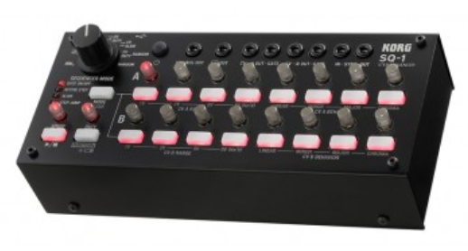

I am still very green when it comes to synth and sequencers etc, and am always looking for new stuff to learn and incorporate into my projects.
With the midi foot controller I have built, I have realized I could very easily use it to control an 8 step sequencer, it will have 2 rows of on/off switches, and 2 rows of adjustable parameters, very similar I guess to this device.. (not including the inputs outputs etc..)

I have watched video about sequencers so I sought of get that each row is for triggering a specific event, and the parameters can adjust the levels of the trigger, and each step is the change in sequence. So I could understand, I can have a sample for each row, each step switched on or off to trigger, with the parameter setting the volume level set for each step.
But what I really want is to learn and understand better how to really use to sequencer, because at the moment, I really struggle to visualize or imagine the variety of ways in which I could use it.
Can anyone recommend any tutorials or video's etc I could use to gain some insight in ways I could use an 8 step sequencer like the one I have described. I have been searching the web the best way I know how, and a lot of it appears to be performance use or lots of in depth patching on a synth, or maybe its just all beyond me.. !!
On a side note, I know from what I have seen that a lot of sequencers are triggered with LFO's and trigger at a fixed rate like a drum machine etc.. but I was thinking less about a fixed rate, but more like the rate of change for each step is triggered manually. This I believe will give more options on what I could with the sequencer ?